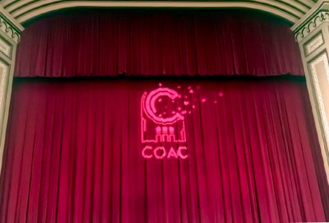

Ver en directo
Ver en directo
Concurso Oficial de Agrupaciones Carnavalescas
El Concurso oficial de agrupaciones carnavalescas de Cádiz (COAC) se celebra en el Gran Teatro Falla durante un mes, teniendo su final el viernes previo al miércoles de Ceniza, después de diferentes fases clasificatorias. En este concurso toma parte gran número de agrupaciones de toda la geografía andaluza e incluso en los últimos años de otras localidades no andaluzas como Ceuta, Mérida o Herencia (Ciudad Real), Barcelona, Burgos o Santoña (Cantabria) e incluso de fuera de España, como es el caso de una comparsa de Uruguay, en 2020. Éstas agrupaciones participan en diferentes modalidades: coros, comparsas, chirigotas y cuartetos.

Es el concurso de agrupaciones carnavalescas más importante de España y entra dentro del programa oficial del Carnaval de Cádiz como uno de los platos fuertes.
En total, el concurso consta de cuatro fases: clasificatoria (preliminares), cuartos de final, semifinales y final. En cada una de ellas, cada Agrupación tendrá un máximo de 30 minutos de actuación en cada sesión, que comienza a contar desde el inicio de la Presentación hasta el final del Popurrí.
Su principal significación es que autoriza la satisfacción de todos los apetitos que la moral cristiana, por medio de la Cuaresma, refrena acto seguido. Pero al dejarlos expansionarse durante un periodo más o menos largo, la moral cristiana reconoce también los derechos de la carne, la carnalidad. El Carnaval encuentra así, además de su significación social y psicológica, su función equilibradora en todos los aspectos. Y todo pese a que en 1523, Carlos I había prohibido totalmente las máscaras.
Volver a la página de Inicio